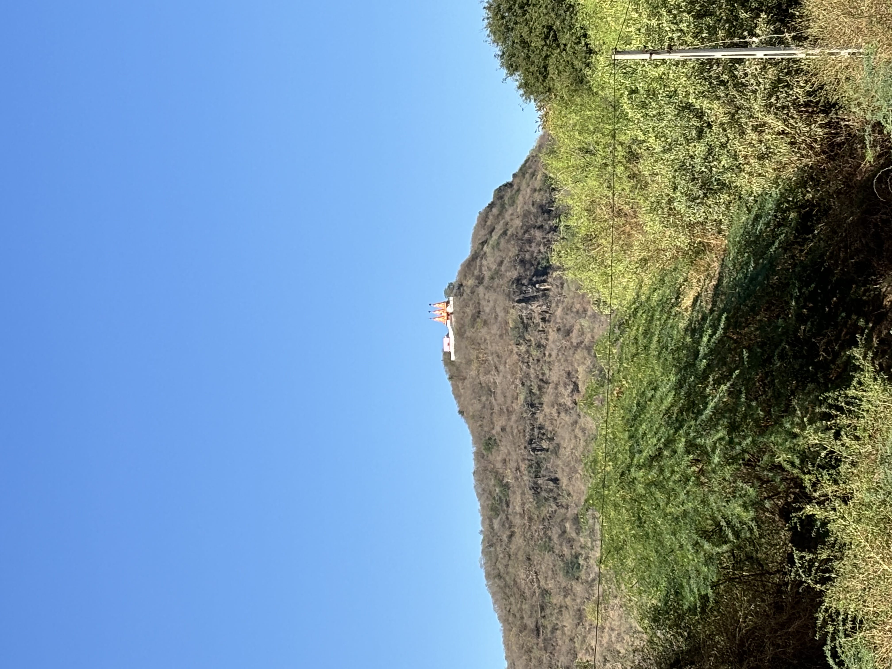

Barda Hills

Unveiling the Enchantment of Barda Hills: A Nature Lover's Paradise
Nestled in the heart of Gujarat, India, lies a hidden gem waiting to be discovered by adventurers and nature enthusiasts alike. Welcome to Barda Hills, a picturesque sanctuary where lush greenery, diverse wildlife, and ancient heritage converge to create an enchanting tapestry of natural beauty. In this blog, we will embark on a virtual journey through the verdant landscapes and rich biodiversity of Barda Hills, uncovering its secrets and marvels along the way.
Exploring Nature's Bounty:
Barda Hills is a haven for biodiversity, boasting a rich tapestry of flora and fauna that thrives in its diverse habitats. From dense forests and rolling hills to serene rivers and cascading waterfalls, the landscape offers a myriad of experiences for nature lovers to indulge in. Take a leisurely stroll through the wooded trails, where towering trees and chirping birds provide a symphony of sights and sounds that soothe the soul. Or embark on a thrilling wildlife safari, where elusive leopards, majestic lions, and graceful deer roam freely in their natural habitat.
Cultural Heritage and Historical Marvels
Beyond its natural splendor, Barda Hills is steeped in history and cultural heritage, with ancient temples and archaeological sites dotting its landscape. Explore the ruins of Junagadh's historic forts, where echoes of bygone eras whisper tales of valor and conquest. Visit the sacred shrines nestled amidst the hills, where devotees gather to pay homage to their gods and seek blessings for prosperity and well-being. Each stone and structure bears witness to the rich tapestry of human civilization that has thrived in this land for centuries, leaving behind a legacy that continues to inspire and captivate.
Adventure and Recreation
For thrill-seekers and adrenaline junkies, Barda Hills offers a plethora of adventure activities to satisfy every craving. Test your mettle with rock climbing and rappelling, as you conquer the rugged cliffs and rocky outcrops that define the landscape. Set off on a cycling expedition through the winding trails, where every twist and turn unveils new vistas and discoveries waiting to be made. Or simply unwind and rejuvenate amidst the tranquil surroundings, as you immerse yourself in the serenity and solitude of nature's embrace.
Preservation and Conservation Efforts
As stewards of this pristine ecosystem, it is our collective responsibility to ensure the preservation and conservation of Barda Hills for future generations to enjoy. Through sustainable practices and responsible tourism initiatives, we can safeguard the delicate balance of nature and protect the invaluable biodiversity that thrives within its borders. By raising awareness and fostering a sense of stewardship among visitors and local communities alike, we can ensure that Barda Hills remains a beacon of natural beauty and ecological integrity for generations to come.
Conclusion
As we conclude our journey through the enchanting landscapes and cultural treasures of Barda Hills, let us carry with us the memories and experiences that have touched our hearts and ignited our spirits. In a world where the pace of life often leaves little time for contemplation and connection with nature, Barda Hills reminds us of the timeless beauty and boundless wonders that await those who dare to venture off the beaten path. So, whether you're a seasoned traveler or a curious explorer, come and discover the magic of Barda Hills – where every moment is a celebration of life, love, and the beauty of the natural world.